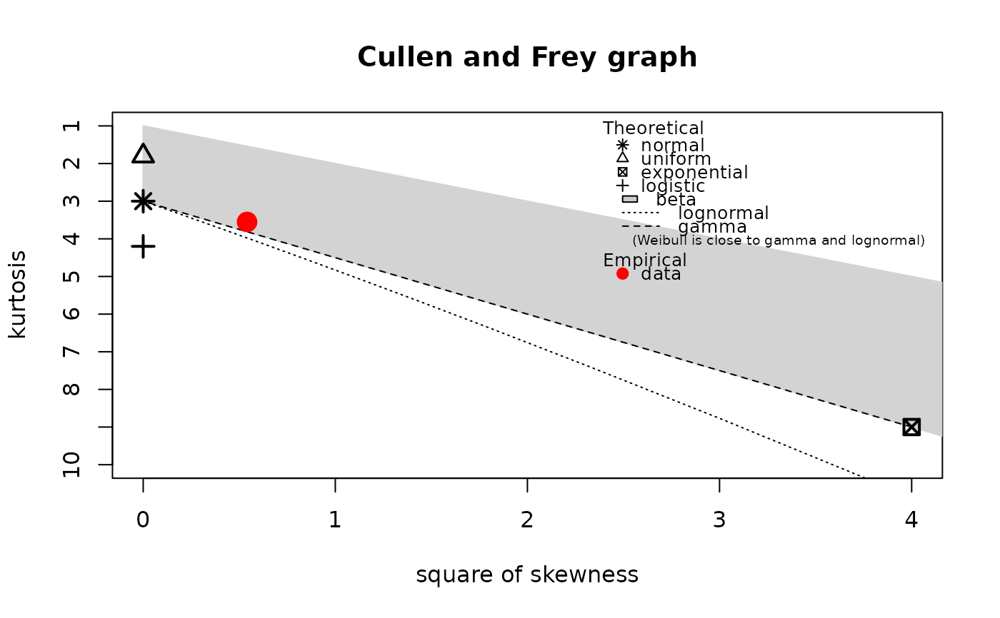

Ground beef serving size data set
groundbeef.RdServing sizes collected in a French survey, for ground beef patties consumed by children under 5 years old.
Usage
data(groundbeef)Source
Delignette-Muller, M.L., Cornu, M. 2008. Quantitative risk assessment for Escherichia coli O157:H7 in frozen ground beef patties consumed by young children in French households. International Journal of Food Microbiology, 128, 158-164.
Examples
# (1) load of data
#
data(groundbeef)
# (2) description and plot of data
#
serving <- groundbeef$serving
descdist(serving)

#> summary statistics
#> ------
#> min: 10 max: 200
#> median: 79
#> mean: 73.64567
#> estimated sd: 35.88487
#> estimated skewness: 0.7352745
#> estimated kurtosis: 3.551384
plotdist(serving)
 # (3) fit of a Weibull distribution to data
#
fitW <- fitdist(serving, "weibull")
summary(fitW)
#> Fitting of the distribution ' weibull ' by maximum likelihood
#> Parameters :
#> estimate Std. Error
#> shape 2.185885 0.1045755
#> scale 83.347679 2.5268626
#> Loglikelihood: -1255.225 AIC: 2514.449 BIC: 2521.524
#> Correlation matrix:
#> shape scale
#> shape 1.000000 0.321821
#> scale 0.321821 1.000000
#>
plot(fitW)
# (3) fit of a Weibull distribution to data
#
fitW <- fitdist(serving, "weibull")
summary(fitW)
#> Fitting of the distribution ' weibull ' by maximum likelihood
#> Parameters :
#> estimate Std. Error
#> shape 2.185885 0.1045755
#> scale 83.347679 2.5268626
#> Loglikelihood: -1255.225 AIC: 2514.449 BIC: 2521.524
#> Correlation matrix:
#> shape scale
#> shape 1.000000 0.321821
#> scale 0.321821 1.000000
#>
plot(fitW)
 gofstat(fitW)
#> Goodness-of-fit statistics
#> 1-mle-weibull
#> Kolmogorov-Smirnov statistic 0.1396646
#> Cramer-von Mises statistic 0.6840994
#> Anderson-Darling statistic 3.5736460
#>
#> Goodness-of-fit criteria
#> 1-mle-weibull
#> Akaike's Information Criterion 2514.449
#> Bayesian Information Criterion 2521.524
gofstat(fitW)
#> Goodness-of-fit statistics
#> 1-mle-weibull
#> Kolmogorov-Smirnov statistic 0.1396646
#> Cramer-von Mises statistic 0.6840994
#> Anderson-Darling statistic 3.5736460
#>
#> Goodness-of-fit criteria
#> 1-mle-weibull
#> Akaike's Information Criterion 2514.449
#> Bayesian Information Criterion 2521.524